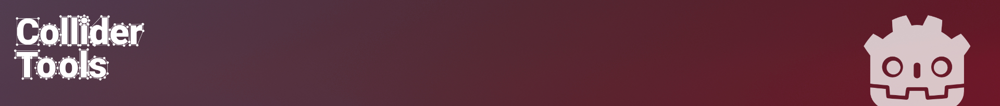
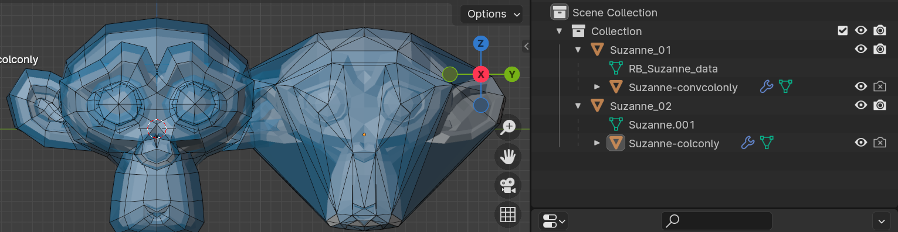
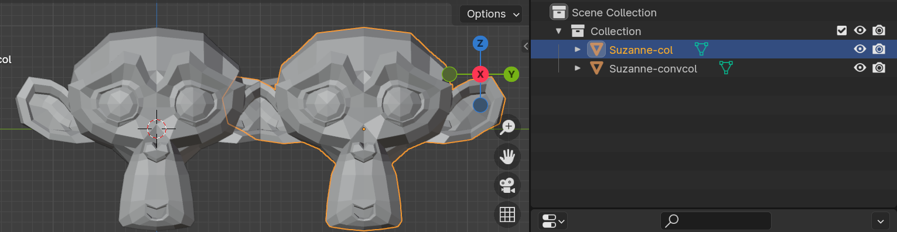
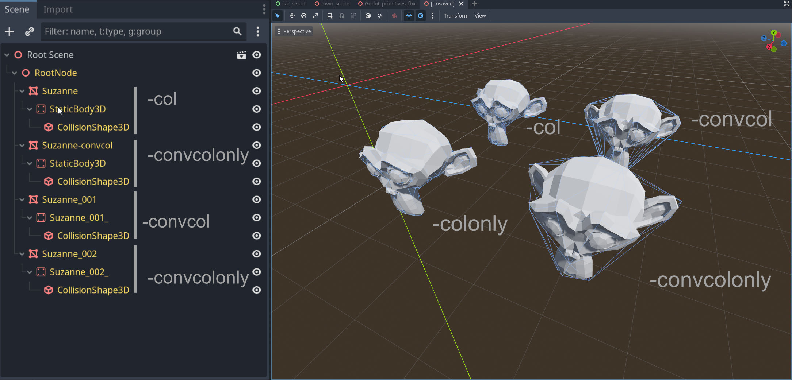

Overview
This guide provides instructions on setting up assets in Blender and importing them into Godot for collision purposes. It covers the usage of Convex and Mesh collider types, which are supported by the Collider Tools addon.
Documentation References
- Godot Documentation: Collision shapes (3D)
- Godot 4.0 Documentation: Collider suffixes
- Godot 4.0 Documentation: Rigid Body
Supported Collider Types
The only collider types that are currently supported by this addon are Convex and Mesh. They can easily be generated with the addon and imported into the game engine.
Godot uses object suffixes, known as Import Hints, to specify different properties per object on import. These hints tell Godot the intended use of an object as a collider.
- -colonly: Imports the object as a Mesh Collider
- -convcolonly: Imports the object as a Convex Collider
- -col: Imports the object as both a visual mesh and a mesh collider.
- -convcol: Imports the object as both a visual mesh and a convex collider.
Setup in Blender
- Name the Assets Correctly: Ensure assets in Blender are named using the corresponding suffixes, specified above.
- Export with Collisions: Export the asset from Blender with the colliders.
- Import into Godot: Import the exported asset into Godot.
I recommend separating visual mesh and collision. This allows for more optimized collision meshes
Following image illustrates the setup in Blender for -colonly, -convcolonly. Here we separate between visual mesh and collision. This allows us to optimize the collision and should be the prefered way to go. The suffix will be added automatically when creating colliders with Collider Tools and using the Godot preset.

Alternatively you can also use the visual mesh as collider:
Following image illustrates the setup in Blender for -col, -convcol. These suffix types define that the objects are used both as visual mesh and as collider.


Once imported into Godot, the scene setup should include a visible Mesh with a StaticBody3D component and a CollisionShape3D component. The CollisionShape3D will be set to either concave or convex, depending on the suffix used.
Primitive Collider Shapes (WIP)
Warning
Setting up primitive collider types in Godot requires a specific approach. This process is not supported by the Collider Tool addon and must be done manually.
Supported primitive shapes in Godot include:
Other Shapes
Godot also offers specialized collision shapes for specific use cases. These include: The SeparationRay type can be imported in a similar way to the primitive collider types.
These shapes should be considered for more advanced and specific collision requirements.